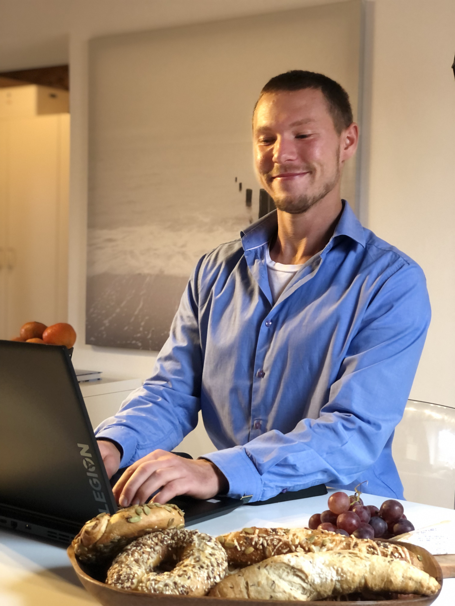

<!doctype html>
<html lang="en">
  <head>
    <meta charset="UTF-8" />
    <meta name="viewport" content="width=device-width, initial-scale=1.0" />
    <link rel="icon" type="image/svg+xml" href="/vite.svg" />
    <!-- <link rel="stylesheet" href="style.css" /> -->
    <title>odin-cv-application</title>
  </head>
  <body>
    <div id="root">
      <!-- <div class="cvButtons">
        <button class="button89">First Standard Deviation Version</button>
        <button class="button89">
          Inverse First Standard Deviation Version
        </button>
        <button class="button89">
          Inverse Second Standard Deviation Version
        </button>
      </div>
      <div class="pictureAbout">
        
        <div class="basicInformation">
          <h1>Basics:</h1>
          <p>Name as per unperforated Passport: Michael Armin Weber</p>
          <p>Age: 31</p>
          <p>Kernel: Linux for work</p>
          <p>Father&Motherland: Germany</p>
          <p>Hobby: Software, with proper Hardware!</p>
          <p>Expected form of compensation: Thank you, cookies, some shares.</p>
          <p>Direct democratic hierarchy preferred.</p>
          <p>Love languages: music, code, food, drawings.</p>
          <p>Likes to fart in the office, so for god sake put him on remote.</p>
        </div>
      </div>
      <div>
        <h1>Education:</h1>
        <p>1994 - today: in grandmaster family school</p>
        <p>2025 - today: learning FullStack development via The Odin Project</p>
      </div>
      <div>
        <h1>Experiences:</h1>
        <p>Life has been hard but very fair so far.</p>
        <p>German villages are ultra safe.</p>
        <p>Gardening is fun most of the time</p>
        <p>
          Corporations: Schaeffler AG, Dr. C. Soldan, EDEKA Weber, Flaschenpost
          SE, public works, self employed
        </p>
      </div>
      <div>
        <h1>Skills:</h1>
        <p>Working towards achieving sustained human winged flight.</p>
      </div>
    </div> -->
    <script type="module" src="/src/main.jsx"></script>
  </body>
</html>

<!-- Button styling source: https://getcssscan.com/css-buttons-examples -->
